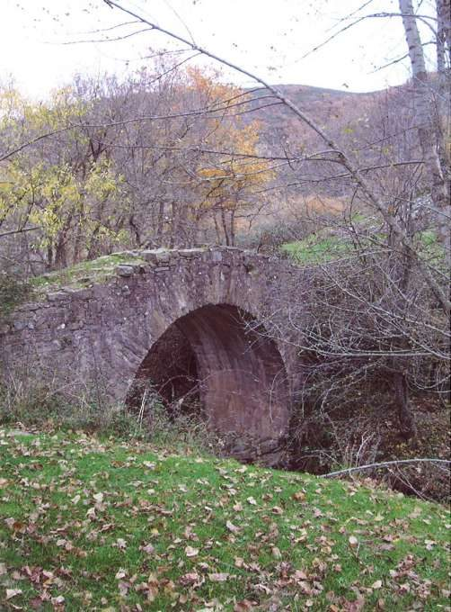
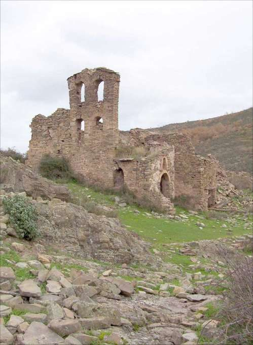

Reinares
Santa Marina · comarca del Jubera
- Distancia2,7 kmida y vuelta
- Desnivel125 m
- Tiempo orientativo1 h
- Dificultadbaja
- Época recomendadatodo el año
- Terrenocamino y senda
Según como se mire, cuarenta años pueden ser un breve espacio dentro de nuestra historia o toda una eternidad. Pues ese es el tiempo que ha pasado desde que muchas de las aldeas de la cuenca del Río Jubera quedaron deshabitadas. Hay muchas para visitar y algunas son también protagonistas de otros capítulos de “Lugares con encanto”, pero puestos a escoger una, yo me quedo con Reinares.
Una vez completado el asfaltado de la carretera que asciende hasta Santa Marina, ahora mismo, esta aldea está a un paso de “la civilización”, pero permanece anclada en el pasado. Si miramos su ubicación en el mapa, vemos que estaba situada lejos de cualquier vía de comunicación importante. La esbelta espadaña de su iglesia, el pequeño puente de piedra por el que se accede a ella y el coqueto arroyo que pasa junto a esta aldea la hacen un lugar idóneo para dejar aparcado el coche y trasladarnos durante unas horas a “otro mundo”.
{kind=link}

{kind=link}

Recorrido
Aproximadamente 1 kilómetro antes de llegar a Santa Marina, en un suave collado, la carretera traza una curva hacia la izquierda, lugar del que también parte la pista de acceso a la aldea de El Collado. Este será nuestro punto de partida. Comenzamos a andar por un camino que enseguida se interna en el bosque y desciende suavemente.
Enseguida el camino nos lleva muy cerca del cauce de un arroyo, momento que aprovechamos para cruzar a su margen izquierda donde nos encontraremos con una senda que transita paralela al cauce. Tomamos este sendero, hacia la derecha, en suave descenso. Paulatinamente abandonamos el bosque y los bordes del sendero se van poblando de jara.
Poco a poco nos vamos alejando del cauce del barranco y, tras un suave giro hacia la izquierda del sendero, vemos ya, a lo lejos, la aldea de Reinares. Enseguida cruzamos sobre un precioso puente de piedra y ascendemos un par de taludes para visitar la aldea.